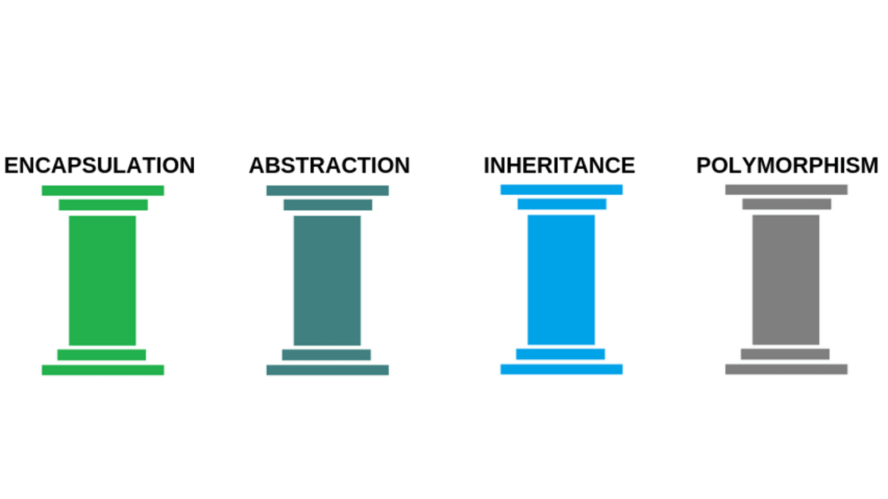

## Interfaces and Polymorphism </br> #### Key topics for tonight <div style="text-align: left;"> - Interfaces </br> - Polymorphism </br> - Interfaces within the SOLID Principles </br> </div> --- ## Interfaces #### Definition An interface contains definitions for a group of related functionalities that a non-abstract class or a struct must implement. --- ## Interfaces (cont) #### Simple Code Example ```C# interface IEquatable<T> { bool Equals(T obj); } public class Car : IEquatable<Car> { public string Make { get; set; } public string Model { get; set; } public string Year { get; set; } // Implementation of IEquatable<T> interface public bool Equals(Car car) { return this.Make == car.Make && this.Model == car.Model && this.Year == car.Year; } } ``` --- ## Interfaces (cont) #### More facts! - <span style="font-size: 1.25rem;">An interface can't be <span style="color: cadetblue;">instantiated</span> directly.</span> - <span style="font-size: 1.25rem;">In C# versions earlier than 8.0, an interface is like an abstract base class with only abstract members. A class or struct that implements the interface must implement all its members.</span> - <span style="font-size: 1.25rem;">Beginning with C# 8.0, an interface may define default implementations for some or all of its members. A class or struct that implements the interface doesn't have to implement members that have default implementations.</span> - <span style="font-size: 1.25rem;">While a class can only <span style="color: cadetblue;">extend</span> one class, it can <span style="color: cadetblue;">implement</span> many interfaces!</span> --- ## Interfaces (cont) #### Example with default implementations ```c# public interface ILogger { void Log(string message); void LogWarning(string message) { Log($"[Warning] {message}"); } void LogError(Exception ex) { Log($"[Error] {ex.Message}\n{ex.StackTrace}"); } } public class DatabaseLogger : ILogger { public void Log(string message) { // Insert logic to log to a database here! } } public class FileLogger : ILogger { private StreamWriter file; public FileLogger(string fileName) { var fileStream = File.Open(fileName, FileMode.Append); file = new StreamWriter(fileStream); } public void Log(string message) { file.WriteLine(message); } } ``` --- ## Polymorphism  --- ## Polymorphism (cont) The ability of objects of different types (such as classes) to provide unique functionality leveraging a shared interface (via an interface or parent class). --- ## Polymorphism (cont) #### Why is it useful? - Prevents us from having to be aware of the concrete implementations of an interface / parent class. - Allows us to build our functionality according to the expectations of the higher level concept. --- ## Polymorphism (cont) #### Code Example <div class="fragment" style="color: cadetblue"> Card Game demo </div> --- ## SOLID Principles - We've already explored one of these concepts a few weeks ago with the <span style="color: cadetblue">Single Responsibility Principle</span> - These design principles are meant to proactively identify common design solutions that are available in object oriented programming languages, such that your code is more understandable, flexible, and ultimately maintainable. --- ## SOLID (cont) - Interface Segregation Principle - Many client-specific interfaces are better than one general-purpose interface. - No client should be forced to depend on methods it does not use. --- ## Interface Segregation Principle #### Example Principle Violation ```c# public interface IPerson { int Age { get; set; } string Name { get; set; } void Talent(); } public class Singer : IPerson { public int Age { get; set; } public string Name { get; set; } public void Talent() { Console.WriteLine("This person is able to sing!"); } } public class PersonWithoutTalents : IPerson { public int Age { get; set; } public string Name { get; set; } public void Talent() { throw new NotImplementedException(); } } ``` --- ## SOLID (cont) - Dependency Inversion Principle - High-level modules should not depend on low-level modules. Both should depend on abstractions. - Abstractions should not depend on details. Details should depend on abstractions. --- ## Dependency Inversion Principle #### Example Principle Violation <div class="fragment" style="color: cadetblue"> Demo </div> --- ## Interfaces and Polymorphism - Concept Check! 1) When might I use an interface rather than an abstract class? 2) What are the strengths of polymorphism? What does it do to improve the quality of my code? 3) Name a couple of best practices to follow when building your own interfaces. --- ## Exercises [Link](https://education.launchcode.org/csharp-web-development/chapters/interfaces-and-polymorphism/exercises.html) --- ## Questions --- # Studio [Link](https://education.launchcode.org/csharp-web-development/chapters/interfaces-and-polymorphism/studio.html)